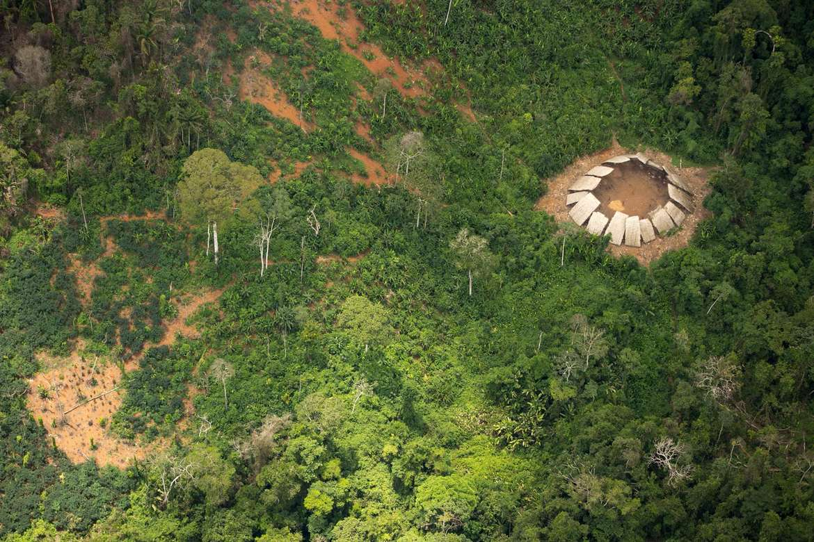
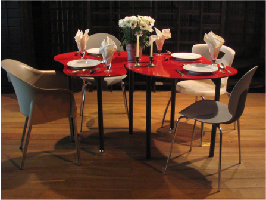

PAVILHÃO Y+ | Nomads.usp, 2024
REFERÊNCIAS
ARQUITETURA YANOMAMI
Conheça a Terra Indígena Yanomami
INSTITUTO SÓCIO AMBIENTAL. Terra Indígena Yanomami. Terras
Indígenas no Brasil. Disponível em
https://terrasindigenas.org.br/terras-indigenas/4016?id_arp=4016. Veja aqui o modo de vida e a arquitetura do povo Yanomami, as
agressões recentes por garimpeiros ilegais e seus efeitos.
SURVIVAL. Os Yanomami. Survival International. Disponível em https://survivalbrasil.org/povos/yanomami.
MOBILIÁRIO ISABELITAS | PMG
Nomads.usp, 2004
A denominação “Isabelitas PMG” advém de uma homenagem à Isabelita dos Patins, drag queen que passeia no calçadão de Copacabana, fantasiada e sobre patins. Consiste em um projeto de mobiliário do Nomads.usp, da Universidade de São Paulo, no qual buscou-se refletir a mobilidade e irreverência da personagem nesta proposta de objetos para o cotidiano contemporâneo.
As Isabelitas consistem em um conjunto de sete peças, segundo três modalidades de superfícies de apoio, projetadas para desempenhar funções múltiplas e complementares em diversos ambientes de acordo com a necessidade do usuário. Sua versatilidade advém do desenho simples e singular e da possibilidade de agrupamento de diversas unidades. Suas formas e cores diversas são responsáveis pela formação de uma ideia de conjunto.
As peças foram realizadas no âmbito do Projeto de Pesquisa Kómunik'ator, financiado pelo CNPq, sob a coordenação do Prof. Associado Dr. Marcelo Tramontano, entre 2003 e 2005.
Website do projeto PAVILHÃO SLICE
Nomads.usp, 2012
Slice é um pavilhão para ações culturais em um conjunto habitacional. A geometria complexa foi usada para criar a forma do pavilhão, e seus componentes foram produzidos pela técnica de fabricação digital de corte a laser. O pavilhão foi construído utilizando-se apenas chapas planas de aço e barras rosqueadas para fixação. Slice é uma ação cultural e de pesquisa do Projeto de Políticas Públicas Territórios Híbridos, realizado pelo Nomads.usp entre março de 2011 e setembro de 2013 e financiado pela FAPESP, sob a coordenação do Prof. Associado Dr. Marcelo Tramontano.
Vídeo do projeto
PROJETO PELES CONTEMPORÂNEAS
Nomads.usp, 2019
O projeto “Peles Contemporâneas” visa produzir conhecimento sobre sistemas de proteção solar para formas arquitetônicas com geometrias complexas. O objetivo do projeto é explorar inter-relações e colaborações possíveis entre processos de design paramétrico e técnicas de fabricação digital, na concepção, produção e funcionamento de sistemas interativos de vedação com geometrias complexas.
Além de procedimentos clássicos de pesquisa, a metodologia inclui a concepção e experimentação de modelos digitais e físicos através do uso de tecnologias de fabricação digital instaladas no Instituto de Arquitetura e Urbanismo da Universidade de São Paulo, visando antecipar aspectos de design, produção e funcionamento dos sistemas propostos.
Financiado pela Pró-reitoria de Pesquisa da USP, o projeto desenvolve-se no Nomads.usp - Núcleo de Estudos de Habitares Interativos, do IAU-USP, onde esses temas vêm sendo tratados, desde 2006, em pesquisas financiadas por agências públicas, sob coordenação do prof. Associado Dr. Marcelo Tramontano.
Website do projeto